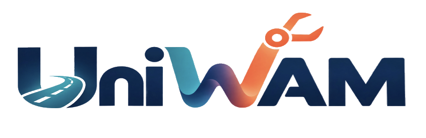
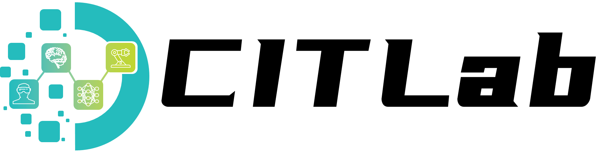
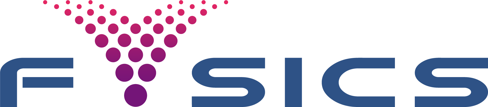
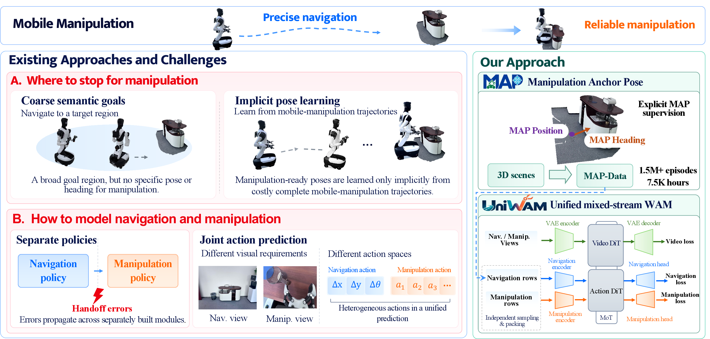
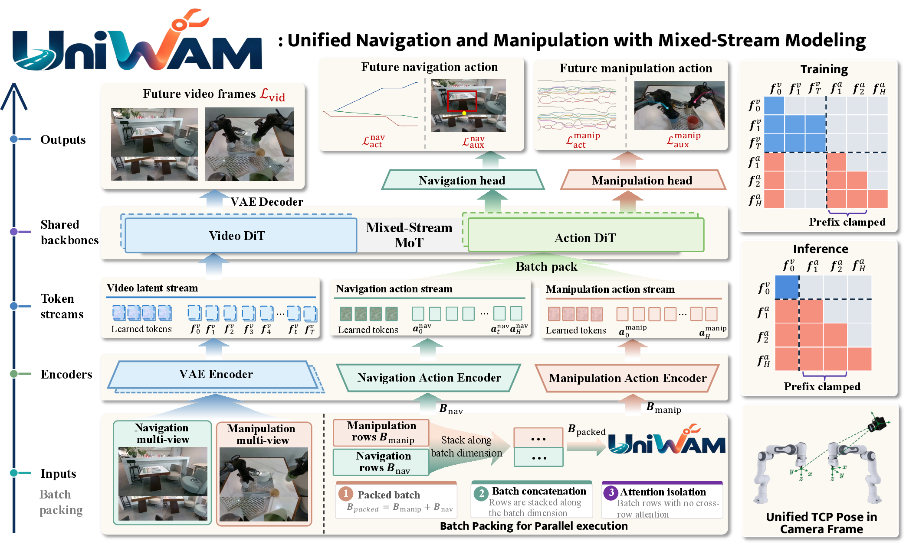
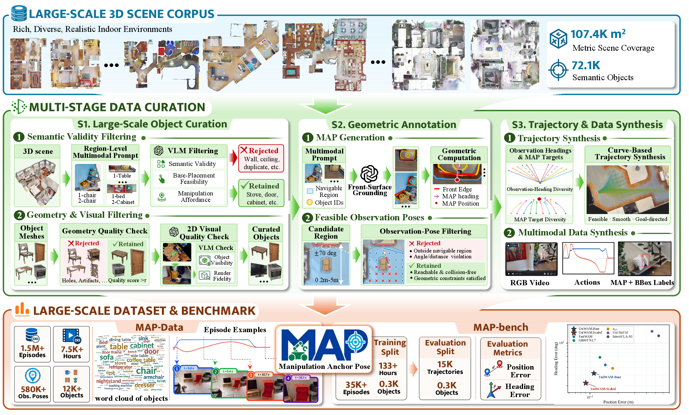
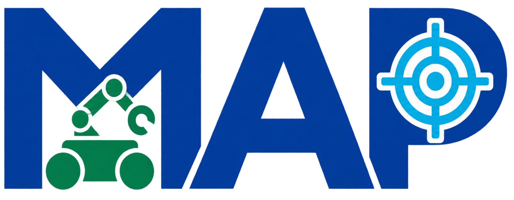
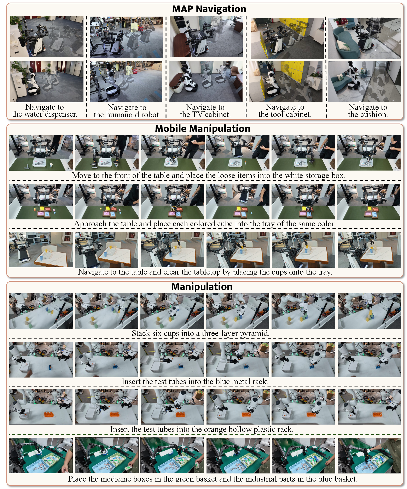
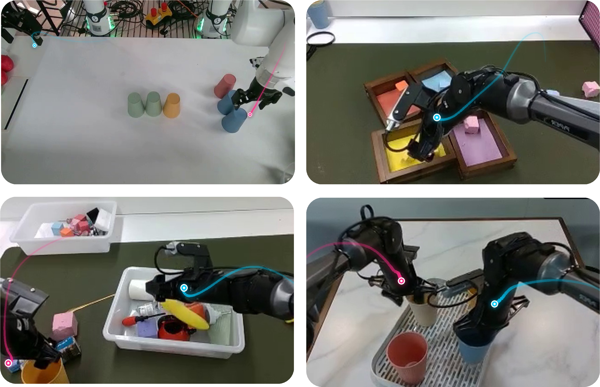

Pose targets, not velocities
Navigation predicts smooth relative pose increments, so errors do not accumulate as quickly over a long approach.

Unified Mobile Manipulation via Mixed-Stream World-Action Modeling and Manipulation Anchor Pose Supervision.


Designed for the full mobile-manipulation loop.
Navigation needs a wide, forward view and smooth base motion. Manipulation needs close-up cameras and high-frequency end-effector control. Treating both as one undifferentiated action stream wastes data and loses the moment where the robot should stop.

Read the paperForward navigation views and local manipulation views have different visual requirements.
Base pose increments and end-effector trajectories live in different action spaces and control rates.
Semantic goals say what to reach, but not the exact position and heading where manipulation should begin.
Each example trains one stream at a time. Navigation and manipulation are packed as separate batch rows, so the same video and action DiTs learn from both without cross-stream attention.

RGB forward view + language + base state
Wrist + head views + language + proprioception
Each behavior sees the cameras and state variables it actually needs.
Navigation-only and manipulation-only data train the same model directly.
Both streams run independently or in one batch during a real task.
Manipulation Anchor Pose (MAP) is an explicit base position and heading for the next interaction. The automated pipeline turns large indoor 3D scenes into dense, image-plane supervision for the entire approach.


MAP =A terminal pose defined by scene geometry, then projected into every observation frame.
All full-length real-robot videos from the supplied archive are grouped as pure manipulation, mobile manipulation, and pure navigation. Every clip is included below with an English, source-grounded title.
Reverse movements were teleoperated; all forward motions were driven by model inference.

On MAP-Bench, explicit MAP supervision and mixed-stream training reduce both terminal position and heading errors. UniWAM-Scaled reaches the lowest error in every distance range, including long-range approaches.
MAP-Bench position error
MAP-Bench heading error
| Model | MAP nav pos / head | Mobile manipulation success | Manipulation success |
|---|---|---|---|
| pi0.5 | 23.3 cm / 5.15° | 62.5% | 71.4% |
| GR00T N1.7 | 18.1 cm / 6.55° | 39.4% | 36.8% |
| UniWAM-Base | 15.1 cm / 4.91° | 63.1% | 44.3% |
| UniWAM-Scaled | 11.7 cm / 4.25° | 80.0% | 68.9% |
On long-range MAP-Bench approaches, UniWAM-Scaled’s position error grows by 1.9 times from short to long range, compared with 6.4 times for pi0.5.
Navigation predicts smooth relative pose increments, so errors do not accumulate as quickly over a long approach.
Target boxes and projected MAP points keep both streams grounded in what the robot sees right now.
Similar visual motions map to similar actions across four embodiments, making mixed data reinforce one another.

Code, data, and benchmark artifacts will be released by Fudan University and Fysics AI.
Wei Xue, Keliang Liu, Mingzhang Cui, Jinhua Xie, Jianan Hou, Jingcheng Lu, Lintao Wang, Kaixiang Qiu, Yizhou Liu, Xinghai Ye, Jinghang Han, Mingcheng Li, Jie Gu, Shunli Wang, Dingkang Yang, Lihua Zhang